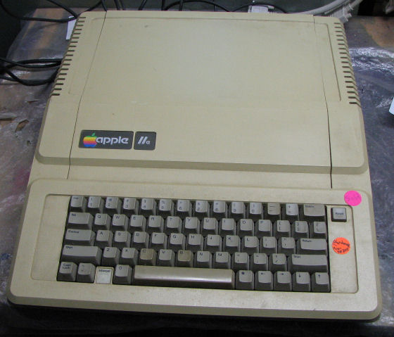

The Apple II Plus was followed in 1983 by the Apple IIe, a cost-reduced yet more powerful machine that used newer chips to reduce the component count and add new features, such as the display of upper and lowercase letters and a standard 64 kB of RAM.The IIe RAM was configured as if it were a 48 kB Apple II Plus with a language card; the machine had no slot 0, but instead had an auxiliary slot that for most practical purposes took the place of slot 3, the most commonly used slot for 80-column cards in the II Plus. The auxiliary slot could accept a 1 kB memory card to enable the 80-column display. This card contained only RAM; the hardware and firmware for the 80-column display was built into the Apple IIe, remaining fairly compatible with the older Videx-style cards, even though the low-level details were very different. An extended 80-column card with more memory expanded the machine's RAM to 128 kB.As with the language card, the memory in the 80-column card was bank-switched over the machines main RAM; this made the memory better suited to data storage than to running software, and in fact the ProDOS operating system, which was introduced with the Apple IIe, would automatically configure this memory as a RAM disk upon booting.
This page is Vlaidated